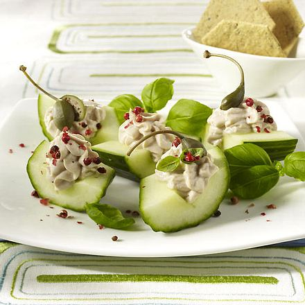

[Schnell & einfach] 3129 leckere Rezepte zum Abendessen | LIDL Kochen
2021.06.24 14:33
Lidl-Kochen.de - Kochen einfach leicht gemacht. Verantwortung Unternehmen Karriere Service & Hilfe Menu Kochbuch Plan Einkaufsliste Einloggen Onlineshop Filial-Angebote Lidl Plus Lidl Inspiration Reisen Weine Fotos Rezepte Zurück zur Kategorie Start Mein Plan Rezeptwelt Kochbuch Sallys Welt Magazin Vegan Connect Partnervorteile
Newsletter abonnieren und keine neuen Rezepte mehr verpassen!
Lass dich von unseren Rezepten inspirieren - Abonniere unseren Newsletter
ABONNIEREN Rezeptwelt Abendessen[[ '%countRecipies% leckere Rezepte zum Abendessen'.replace('%countRecipies%', totalCount ) ]]
3129 leckere Rezepte zum Abendessen
Schnelle Filter Neue Rezepte Schnell & einfach Hauptspeise mit Fleisch Vegetarische Hauptspeise Abnehmen Schnelle Filter Neue Rezepte Schnell & einfach Hauptspeise mit Fleisch Vegetarische Hauptspeise Abnehmen Sallys Welt Rezepte Einfach Backen und Kochen mit Sally Mahlzeit Frühstück Mittagessen Snack Abendessen Dessert Getränke Brunch Suppe Vorspeise Aufwand Einfach Mittel Schwierig Zubereitungszeit gesamt [[ searchOptions.preparationTotalTime.from ]] - [[ searchOptions.preparationTotalTime.to ]] min [[ searchOptions.preparationTotalTime.from ]] - [[ searchOptions.preparationTotalTime.to ]] min Ernährungsweise Zutaten ANLASS für die Arbeit Bestof2020 Party beliebte Rezepte Picknick Geschenke aus der Küche Camping Fussball Snacks Zielgruppe Babys für Paare Familie für Singles Gäste für Studenten Kinder Zubereitungsart Ausschliessen Wir schließen Gerichte mit diesen Zutaten aus [[ ingredient.name ]] Stachelbeere Algen Alkohol Amaranth Ananas Anchovis Anis Wassermelone Aromen Apfelbeere Avocado Trockenobst Aubergine Banane Hammelfleisch Lebensmittelfarbe Süßkartoffel Basilikum laktosefrei Baiser Bisquits Speck Seitlinge Mangold Steinpilz Preißelbeere amerikanische Heidelbeere Saubohne Brandy Brokkoli Steckrübe Rosenkohl Schafskäse Pfirsich Pudding Brötchen trockenes Brötchen Paniermehl rote Rüben rote Beete Erd-Burzeldorn Zwiebel Kornblume Halva Chili Chips Brot Roggenbrot Meerrettich Blätterteig Kirchererbse Kalbsfleisch Wildrücken Crunchy Zucker brauner Zucker Birkenzucker Zimtzucker Kokoszucker Palmzucker Zucchini Curry Chicorée Zimt Zitrone Scharzkümmel Bohnenkraut Schokolade Süßkirschen Knoblauch Grüne Tschubritza rote Beete mit Meerrettich Datteln Dorade Dorsch Hefe Geflügel Kürbis Marmelade Extrakt Estragon Bohnen Brechbohne Fenchel Feige Eingeweide Pommes Frites, tiefgekühlt Götterspeise Muskatnuss Garam Masala Gans Glukose Gluten Senfkörner Nelken Granatapfel Grapefruit Erbse grüne Erbsen Backerbsen Birnen Grieß Pilze Shitakepilze Harissa Butterkekse Tee Persimone Ingwer Puten andere Allergene Äpfel Lammfleisch Blaubeeren Wachteleier Ei Wacholder Grünkohl Brombeere Joghurt Ziegenjoghurt laktosefreier Naturjoghurt Gartenkürbis Dauerwurst Kabanos Ente Sahne-Karamell-Creme Kakao Blumenkohl Kohlrabi Kalmar Schirmpilz Kapern Kohl Sternfrucht Artischocken Kardamon Karpfen Graupen Bulgur Buchweizengraupen Hirsegraupen Gerstengraupen Maisbrei Couscous Manna-grütze Getreide graupen Grützwurst Kastanie Kaffee Malzkaffee Kefir Ketchup Würste Bohnensprossen Kaltschale Kiwi Kreuzkümmel Kokos Koriander Gänsefuß Konserven Dill Brühwürfel – Pile Brühwürfel – Gemüse Bockshornklee Crackers Garnelen Kaninchen Sahnebonbon Auszugsmehl Xylitol Mais Kumquat Hähnchen Pfifferlinge Kurkuma Vollkorncouscous getrockneter Lavendel Eierlikör Limette Schleie Rote-Beete-Blätter Lorbeerblatt Rübenblatt Liebstöckel Lachs Mazze Madera (Wein) Maitake Majoran getrockneter Majoran Mayonnaise Mohn Reisnudeln Nudeln Makrele Himbeere Miesmuscheln Mandarine Mango getrocknete Mango Maniok Maracuja Maranta Marzipan Möhre violette Möhre gelbe Möhre Margarine Krowki-Masse Butter Mandelbutter Erdnussbutter Pflanzenbutter Buttermilch Graham-Mehl Buchweizenmehl Hirsemehl Kokosmehl Maismehl Mandelmehl Dinkelmehl Hafermehl Weizenmehl Weizenvollkornmehl Vollkornmehl Reismehl Amaranthmehl Kartoffelmehl Roggenmehl Roggenvollkornmehl Mehl Melone Fleisch Minze Mandeln Alaska-Seelachs Honig laktosefreie Milch Kokosmilch Ziegenmilch Kuhmilch Mandelmilch Schafsmilch Pflanzenmilch Sojamilch Löwenzahl Aprikose Seehecht Maulbeere schwarze Maulbeere Brustbein Müsli Senf Milchprodukte Rote-Beete-Kraut Rübenkraut Anissamen Chia-Samen Kreuzkümmelsamen Dillsamen Bockshornkleesamen Selleriesamen Sonnenblumenkerne Petersilienkraut Nektarine Nutella Essig Gurke saure Gurke eingelegte Gurke Barsch Pflanzenfette Olivenöl Oliven Oregano Kokosnuss Haselnuss Cashewnuss Pekannuss Walnuss Nüsse Erdnüsse Pinienkerne geräucherter Hartkäse aus Schafsmilch – oscypek Mariendistel Oktopus Kleie Kaki Obst exotisches Obst Litschi Meeresfrüchte getrocknete Früchte Pack Choi Surimi Pangasius Tempura-Teig Papaya Reispapier Paprika gemahlene Paprika Parmesan Wiener Würstchen Schinkenwürstchen Misopaste Pastinate Pastete Ufo-Kürbis Perlhuhn Kürbiskerne Pesto Bambustriebe Champignon Knäckebrot dunkles Brot und Brötchen helles Brot und Brötchen Pfeffer Pfifferling Lebkuchen Petersilie Quitte Pistazien Bier dunkles Bier helles Bier Flocken Hirseflocken Gerstenflocken Cornflakes Dinkelflocken Haferflocken Reisflocken Roggenflocken Jamswurzel Maronenpilze Innereien Orange Pomelo getrocknete Tomate Tomaten Porree Portulak Johannisbeere bunte Streusel Pflaumenmus Walderdbeere Steinpilz Backpulver Jakobsmuschel Wachtel Vegeta-Gewürz Lebkuchengewürz Forelle Lachsforelle geräucherte Forelle Weizen Pumpernickel Rhabarber Radicchio Rosinen Hühnerbrühe Feldsalat Rosmarin Brunnenkresse Rucola Rum Fische Reis Arborio-Reis Basmati-Reis Vollkornreis roter Reis Langkornreis Risotto-Reis Sushi-Reis wilder Reis Jasminreis vorbereiteter Reis Reis Tricolor Rübe Kresse weißer Rettich Radieschen Salep Haferwurzel Salat Zander Garten-Schwarzwurzel Sellerie Käse Frischkäse Brie Camembert Feta Mascarpone Mozzarella Pecorino Schimmelkäse Ricotta Taleggio-Käse geräucherter Käse Schnittkäse Quark Schmelzkäse Sesam Shiitake Hanfsamen Leinsamen Schwarzwurzel Orangenschale Speisestärke Kartoffelstärke Süßstoff Schmalz Morchel Linse schwarze Linse rote Linse grüne Linse gelbe Linse Natron Soja Saft eingelegter Gurken Mirinsauce Austernsauce Fischsauce Sojasauce Salz Spiritus Zwieback Wels Ahornsirup Rohrzuckersirup Agavendicksaft Rambutan-Sirup Safran Schalotte Salbei Sauerampfer Spargel Spinat Heringe Schnecken Pflaume Sahne Schlagsahne Tapioka Tilapia Tofu Topinambur Weizentortilla Zitronengras Trüffel Erdbeeren getrockneter Kerbel Kerbel Thunfisch Thymian Waffeln Reiswaffeln Vanille Gemüse Wasabi Aufschnitt Whisky Schweinefleisch Wein Weintraube Sauerkirsche Suppengemüse Wasser Rindfleisch Wodka Hase Sojasamen Piment Kartoffeln Kräuter Gelatine Weingummis Preiselbeere Kichererbsenmehl Eiweißpräparat WPC Waldfrüchte Mung-Bohne Bambus rote Bohne essbare Blüten Kokosbutter Kokosflocken Radieschensprossen kleine Maispyramiden mit Schwarzkümmel Maisflips Gemüsepaste Salzstangen Paste aus weißen Bohnen Balsamicosauce Mang-Chutney-Paste Mild-Curry-Paste Grünkohlsprossen Haferbrei getrocknetes Rindfleisch Blaualge Brokkolisprossen Gnocchi Schnittlauch Paranuss Reisbrei Dinkelbrei Apfelwein kleine Brezeln Zuckerguss Lutschbonbons Bonbons Süßigkeiten Kekse Reizker Rote-Beete-Sprossen Dattelsirup Hoisin-Sauce Sriracha-Sauce Dinkelmilch Weizennudeln Vollkornnudeln Sojanudeln Holundersirup Granatapfelmelasse Clementine Verbene Melisse Xanthan Agar Agar Luzernensprossen Barbecue-Sauce Kaviar Wildfleisch Sorbet Pfannkuchen Physalis Hirse Hafer Heilbutt Mirabelle Sprossen Fett Schinken Salami Gewürze Getreide Hülsenfrüchte Eis Öl Matcha Weißwein Rotwein Likör Tzatziki Karotte Bouillon Gemüsebouillon Geflügel bouillon Rinderbouillon Fleischbouillon Laktose Maultaschen Austern Länderküche Kategorie Kaloriengehalt pro Portion [[ searchOptions.calories.caloriesFrom ]] - [[ searchOptions.calories.caloriesTo ]] kcal [[ searchOptions.calories.caloriesFrom ]] - [[ searchOptions.calories.caloriesTo ]] kcal Video Nur Rezepte mit Video anzeigen Filial-Angebot Nur Rezepte mit Filial-Angeboten anzeigen Für Rezepte mit Filial-Angeboten ganz einfach hier klicken OK Anwenden Filtern Filter ändern Sortieren: Die Gerichte, die im Zusammenhang mit leckeren Rezepten zum Abendessen entstehen können, bilden nicht selten die Grundlage für eine erholsame Nachtruhe. Doch welche Speisen eignen sich eigentlich besonders gut, um ein paar Stunden vor dem Schlafengehen genossen zu werden? Da zu deftige, schwere Gerichte sich hier oft als weniger bekömmlich erweisen, ist es wichtig, unbedingt auf den passenden Mix an Zutaten zu setzen. Gleichzeitig ist es sinnvoll, dem Körper ausreichend Zeit dazu zu geben, zu verdauen, bevor die Nachtruhe final eingeläutet werden kann. Auch wenn der persönliche Geschmack mit Hinblick auf leckere Rezepte zum Abendessen natürlich immer eine tragende Rolle spielt, gibt es viele Klassiker, mit denen das Revue-Passieren des Tages sicherlich noch ein wenig mehr Spaß macht. Deine Filter: Ausgeschlossenen [[ searchOptions.tag.name ]] [[ item.name ]] Frühstück Mittagessen Snack Abendessen Dessert Getränke Brunch Suppe Vorspeise für die Arbeit Bestof2020 Party beliebte Rezepte Picknick Geschenke aus der Küche Camping Fussball Snacks [[ item.name ]] [[ item.name ]] [[ item.name ]] [[ item.name ]] [[ item.name ]] [[ item.name ]] Einfach Mittel Schwierig [[ searchOptions.preparationTotalTime.from ]] - [[ searchOptions.preparationTotalTime.to ]] min [[ searchOptions.calories.caloriesFrom ]] - [[ searchOptions.calories.caloriesTo ]] kcal Video Sally Filial-Angebot alle Filter löschen Sortieren: Möchtest du abnehmen? Überprüfe den Diätplan Entdecke neue Rezepte Zu den Rezepten REZEPT DER WOCHE VIDEO [[ recipe.likeCount ]] [[ recipe.preparationTotalTime ]] [[ recipe.goLiveDate ]] Keine passenden Rezepte gefunden - Bitte lösche einige Filter Leider kein passendes Rezept gefunden. VORHERIGE / [[ totalPageCount ]] NÄCHSTEImmer noch beliebt: die klassische Brotzeit
Für viele Menschen gehören belegte Brote zum krönenden Abschluss eines erfolgreichen Tages. Doch selbstverständlich muss hierbei nicht zwangsläufig „nur“ auf Wurst und Käse zurückgegriffen werden.
Vielmehr macht es im Zusammenhang mit leckeren Rezepten zum Abendessen auch Sinn, wichtige Nährstoffe aufzunehmen. Außerdem sorgen gesunde Lebensmittel wie Tomaten , Gurken und Möhren (in Scheiben geschnitten) zusätzlich für ein wenig mehr Abwechslung auf der Brotscheibe.
Falls dieser altbekannte Snack danach immer noch als zu trocken empfunden wird, können natürlich auch Salatblätter und verschiedene Saucen zum Einsatz kommen. Kurz: die Möglichkeiten, einen Klassiker in ein echtes Highlight des Abendessens zu verwandeln, sind extrem vielseitig.
Fantasievolle Eigerichte: leckere Ideen zum Abendessen
Auch Eier eignen sich super, um in kulinarischer Hinsicht mit einem Tag abzuschließen. Egal, ob als Rührei oder in der Spiegeleivariante: auch hier kann es durchaus Spaß machen, mit den verschiedensten Zutaten zu experimentieren.
Wer möchte, kann sein klassisches Rührei beispielsweise mit ein paar wenigen Handgriffen in ein leckeres Omelett verwandeln. Ein wenig deftiger (und kalorienreicher) werden die entsprechenden Kombinationen mit einem Klecks Mayonnaise.
Kurz: wer Eigerichte in seinen Alltag integrieren möchte, muss dies nicht zwangsläufig nur im Zusammenhang mit dem bewährten Frühstücksei versuchen. Dieser kulinarische Allrounder schmeckt unabhängig von der Tageszeit.
Suppe und Würstchen: deftig und nicht zu schwer
Viele Menschen kennen dieses leckere Rezept zum Abendessen sicherlich noch aus ihrer Kindheit. Suppen und Eintöpfe werden gern mit der (für viele fast schon obligatorischen) Wursteinlage kombiniert.
Die entsprechenden Gerichte bieten einen hohen Sättigungsgrad, ohne allzu schwer im Magen zu liegen. Ideal also, um den kulinarischen Abschluss eines besonderen Tages zu bilden. Wer möchte, kann die verschiedenen Kreationen natürlich auch noch mit Brötchenstücken oder Croutons aufwerten und mit verschiedenen saisonalen Kräutern verfeinern.
Pizza und Nudeln zum TV-Abend
Hierbei handelt es sich um besonders leckere Gerichte, die sicherlich nicht jeden Tag genossen werden sollten, jedoch echte Highlights des Alltags darstellen.
Wer ohnehin (zum Beispiel am Wochenende) plant, später zu Bett zu gehen, greift oft auf einen besonderen Vertreter des „Fast Food“ zurück. Pizza schmeckt in der selbstbelegten Variante doch auch einfach am besten, oder?
Je nach persönlichem Geschmack können die verschiedenen Bereiche des Blechs mit den jeweils bevorzugten Zutaten belegt werden. Von Salami über Meeresfrüchte bis hin zur Veggie Variante ist hier so gut wie alles „erlaubt“. Erfahrene „Pizzabäcker“ versuchen sich an weiteren Ideen, wie zum Beispiel einer geschlossenen und gefüllten Calzone oder kleinen Pizzabrötchen.
Erstelle ein Konto und speichere deine Favoriten
Anmelden REZEPT DER WOCHE Albóndigas – Fleischbällchen in Tomatensauce Zum Rezept Sichere Bestellung Kostenlose Retoure Rückgabefrist von 90 Tagen Lieferung an Packstation Mehr von Lidl Angebote Onlineshop Lidl Inspiration Reisen Weine Fotos Rezepte Connect Partnervorteile Lidl Apps Rechtliches Impressum Nutzungsbedingungen Datenschutzbestimmungen Gesetzliche Zusatzinformationen Widerrufsrecht Verhaltenskodizes Compliance Verantwortung Sitemap KontaktTel.: 0800 - 43 53 361 Kostenfrei. Anrufe nur innerhalb Deutschlands möglich.
Mo. - Sa. 8.00 – 20.00 Uhr
Verantwortung Unternehmen Karriere Service & HilfeFacebook Messenger Pinterest WhatsApp E-mail Link kopieren OK JA NEIN
- 21 schnelle Rezepte für einen leckeren Feierabend .
- Kochbuch: Schnelles Abendessen | EAT SMARTER
- Schnelles Abendessen | Leckere Kochideen | Kitchen Stories
- Rezepte für ein schnelles Abendessen | Chefkoch.de
- Schnelle Mittagessen - 6 Rezepte unter 30 Minuten • Koch-Mit
- [Schnell & einfach] 3112 leckere Rezepte zum Abendessen .
- Gesunde-Abendessen-Rezepte | Swissmilk
- 2871 leckere Rezepte fürs Abendessen - REWE
- 900+ ABENDESSEN SCHNELL & EINFACH . - Pinterest
- Abendessen-Rezepte - einfach und lecker | DasKochrezept.de
- 21 schnelle Rezepte für einen leckeren Feierabend .
- Kochbuch: Schnelles Abendessen | EAT SMARTER
- Schnelles Abendessen | Leckere Kochideen | Kitchen Stories
- Rezepte für ein schnelles Abendessen | Chefkoch.de
- Schnelle Mittagessen - 6 Rezepte unter 30 Minuten • Koch-Mit
- [Schnell & einfach] 3112 leckere Rezepte zum Abendessen .
- Gesunde-Abendessen-Rezepte | Swissmilk
- 2871 leckere Rezepte fürs Abendessen - REWE
- 900+ ABENDESSEN SCHNELL & EINFACH . - Pinterest
- Abendessen-Rezepte - einfach und lecker | DasKochrezept.de
